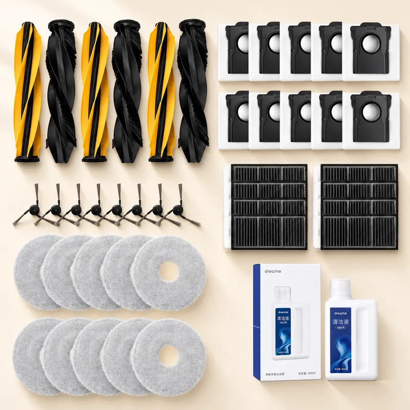
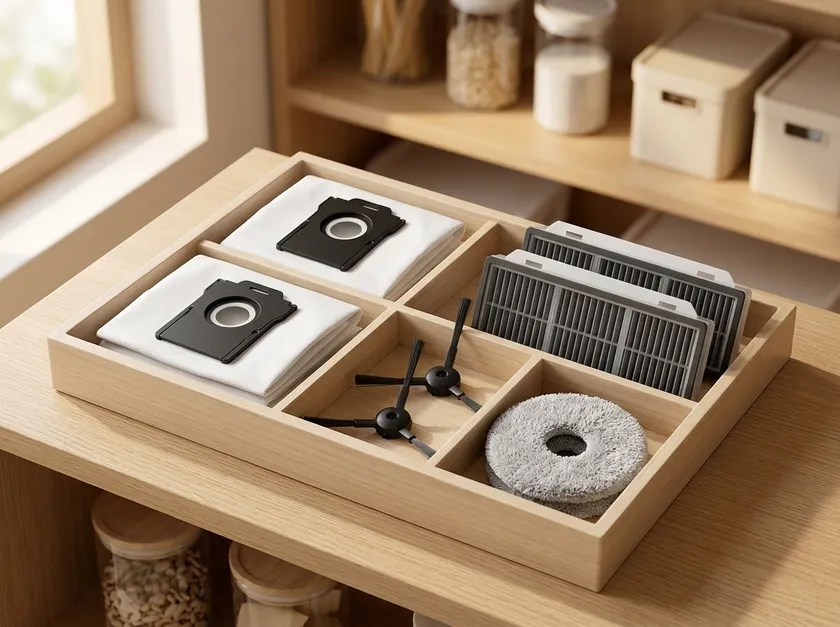
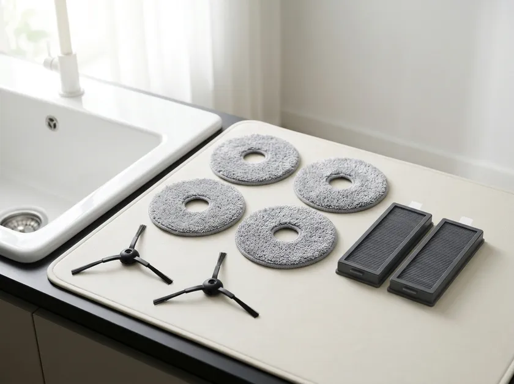

드리미 (Dreame)
드리미 X50s Pro 직배수 Master 1년 세트 구성과 듀오브러시·물걸레 관리
글·구성: 제이상점 · 기종별 1:1 호환 실물 점검 · 교체 주기 비교표 · 스마트스토어 패키지 안내

핵심 관리 · 선택 체크포인트
- 직배수 키트나 대용량 스테이션으로 물걸레 세척을 자주 돌리는 드리미 X50s Pro·Master 라인업은 브러시와 걸레 패드 마모 주기를 미리 챙겨 두면 청소 품질이 일정하게 유지됩니다.
- 엉킴 방지 원추형 듀오브러시 한 쌍과 3발 사이드브러시 점검: 드리미 X50s Pro 시리즈는 한쪽 끝이 좁아지는 원추형 듀오브러시 2개가 맞물려 회전하며 머리카락을 흡입구로 유도합니다.
- 1년 패키지 구성품과 기종별 옵션 확인표: 상세페이지에서 보유 모델명(X50s Pro Ultra / X50s Pro Master)과 세제 포함 옵션을 먼저 확인해 주세요.
- 세탁실 싱크 매트 건조와 팬트리 트레이 수납 루틴: 온수 세척을 마친 원형 물걸레 패드와 물세척한 다크그레이 필터는 통풍 매트에서 완전히 말려 교대로 끼우고, 여분 더스트백과 세척액은 스테이션 옆 수납함에 모아 두면 관리 동선이 간결해집니다.
- 드리미 세제 라벨 확인법과 세제통 점검 순서를 함께 살펴보세요: 전용 세척액 병 라벨과 모델 표기를 대조하는 방법은 드리미 로봇청소기 세제 구매 전 모델명·라벨 확인법에서, 세제 투입 상태를 점검하는 요령은 드리미 X50 시리즈 세제통 잔량 확인법에서 확인해 보세요.
실물 부품 디테일 · 관리 구성 이미지




부품 규격 · 점검 기준표
| 확인 항목 | 부품·옵션 특징 | 점검·선택 포인트 |
|---|---|---|
| 원추형 듀오브러시·3발 사이드브러시 | 회색·검은색 듀오브러시 쌍 + 3발 사이드브러시 | 브러시 양끝 단차 결합 방향과 고무 핀 마모 상태 확인 |
| 다크그레이 필터·더스트백 | 직사각 헤파필터 + 플라스틱 칼라 더스트백 | 필터 2개 교대 그늘 건조 및 더스트백 슬롯 밀착 장착 |
| 원형 물걸레 패드·전용 세척액 | 회전형 원형 걸레 패드 + 전용 클리너 옵션 | 온수 세척 후 벨크로 밀착력과 도크 세제통 잔량 동시 체크 |
💡 교체 주기가 겹치는 필터·브러시·물걸레·더스트백은 단품 배송비를 여러 번 내기보다 드리미 X50s Pro Master 기간별 세트(3개월·6개월·1년)로 미리 구비해 두면 물세척 후 24시간 교대 건조까지 끊김 없이 관리할 수 있습니다.
자주 묻는 질문 (FAQ)
Q. 드리미X50sPro의 원추형 듀오브러시·3발 사이드브러시 규격과 관리 기준은 무엇인가요?
A. 회색·검은색 듀오브러시 쌍 + 3발 사이드브러시 규격을 사용하며, 브러시 양끝 단차 결합 방향과 고무 핀 마모 상태 확인 기준으로 점검·교체하면 청소 효율을 안정적으로 유지할 수 있습니다.
Q. 드리미X50sPro의 다크그레이 필터·더스트백 규격과 관리 기준은 무엇인가요?
A. 직사각 헤파필터 + 플라스틱 칼라 더스트백 규격을 사용하며, 필터 2개 교대 그늘 건조 및 더스트백 슬롯 밀착 장착 기준으로 점검·교체하면 청소 효율을 안정적으로 유지할 수 있습니다.
Q. 드리미X50sPro의 원형 물걸레 패드·전용 세척액 규격과 관리 기준은 무엇인가요?
A. 회전형 원형 걸레 패드 + 전용 클리너 옵션 규격을 사용하며, 온수 세척 후 벨크로 밀착력과 도크 세제통 잔량 동시 체크 기준으로 점검·교체하면 청소 효율을 안정적으로 유지할 수 있습니다.
제이상점 1:1 검수 추천 패키지 · 구매 안내
☑️ 주문 전 확인해 두면 좋은 제이상점 안심 포인트
· 기종별 1:1 전용 규격 검수: 모델명·연식에 맞는 호환·정품 구성을 검수해 오주문 불안을 줄였습니다.
· 해외직배송 미리 주문 팁: 중국 구매대행·해외직배송 상품이므로 마지막 여분 1개를 꺼내 쓰는 시점에 개인통관고유부호와 함께 여유 있게 주문해 두시면 훨씬 경제적인 비용으로 끊김 없이 교체하실 수 있습니다.
· 기종별 1:1 전용 규격 검수: 모델명·연식에 맞는 호환·정품 구성을 검수해 오주문 불안을 줄였습니다.
· 해외직배송 미리 주문 팁: 중국 구매대행·해외직배송 상품이므로 마지막 여분 1개를 꺼내 쓰는 시점에 개인통관고유부호와 함께 여유 있게 주문해 두시면 훨씬 경제적인 비용으로 끊김 없이 교체하실 수 있습니다.
📖 더 많은 가정 내 사용 스토리와 상세 후기가 궁금하시다면
📱 네이버 블로그 모바일 원문 보기 ↗